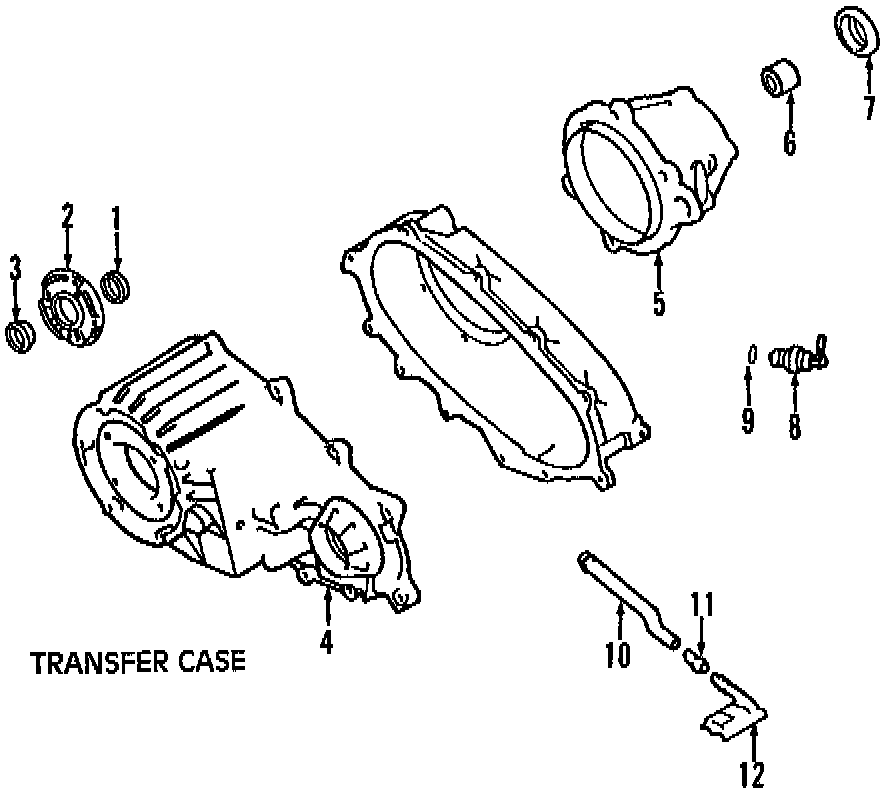
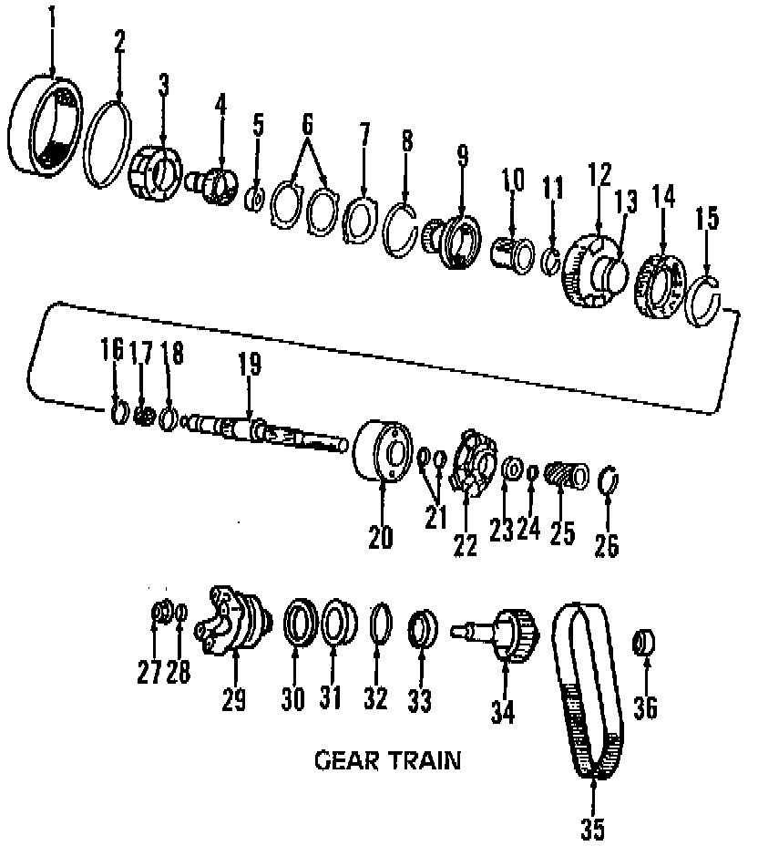
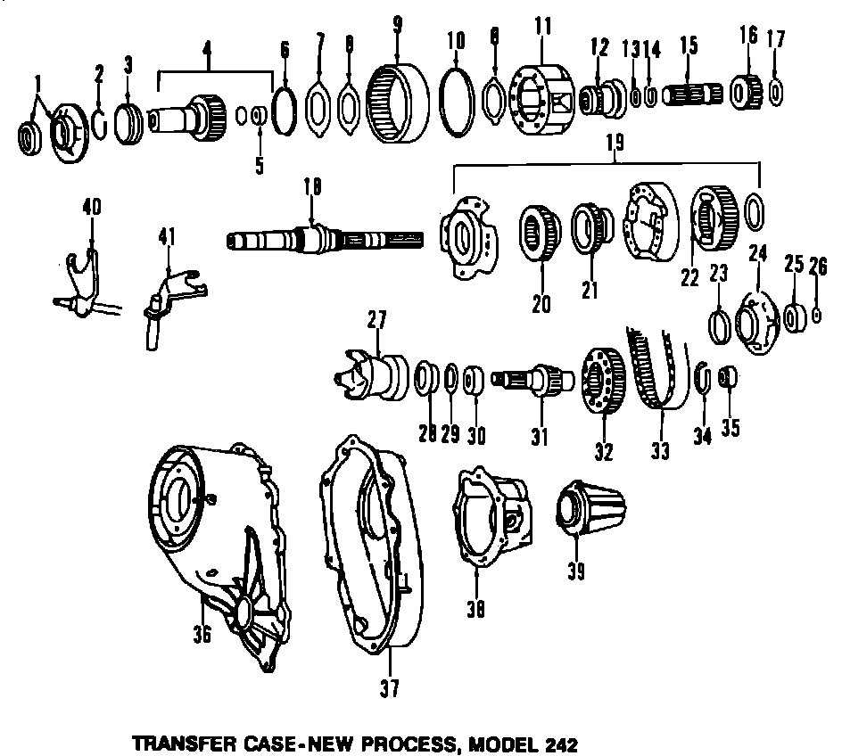

Operation CHARM
: Car repair manuals for everyone.
Русский
Home
>>
Jeep
>>
1997
>>
Grand Cherokee 4WD L6-4.0L VIN S
>>
Parts and Labor
>>
Transmission and Drivetrain
>>
Transfer Case
>>
Images
Images
Case & Related Parts, New Process (NP-249):

Gear Train, New Process (NP-249):

New Process (NP-242):
